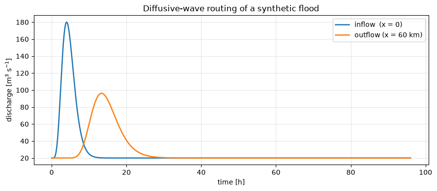
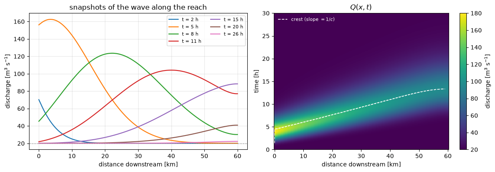
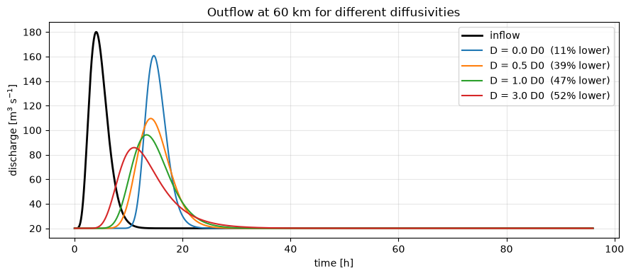
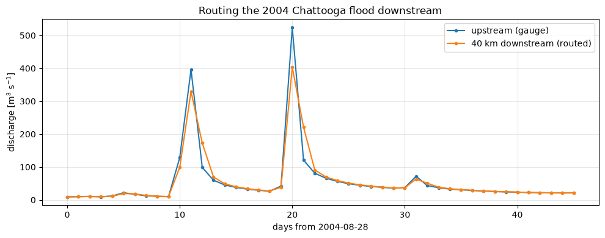
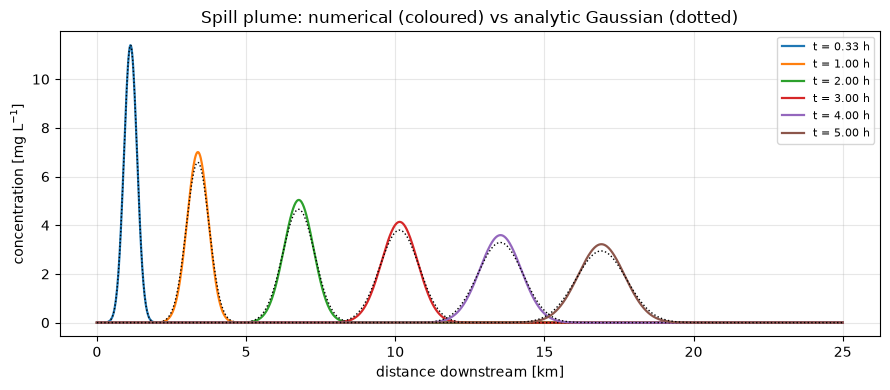
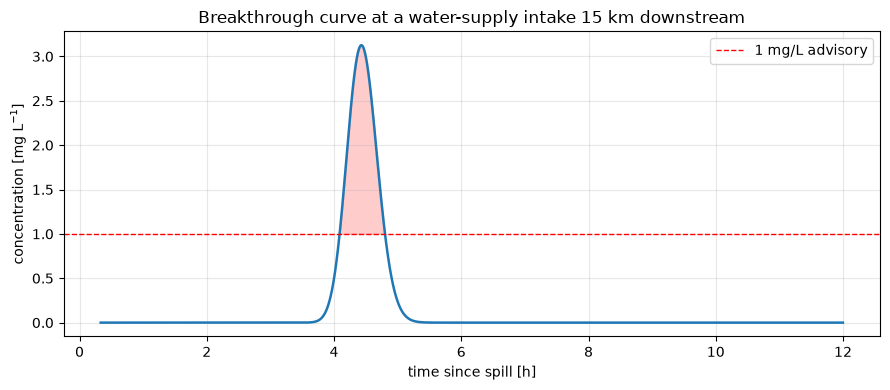

Lecture 10, Advection and diffusion in a river#
Lecture 9 solved the one-dimensional advection–diffusion equation for the temperature of the ocean. The same equation, discretised with the same three-line update, answers two everyday questions in hydrology:
Flood routing — a flood wave leaves an upstream reach as a sharp hydrograph. What does it look like at a town, a gauge, or a reservoir tens of kilometres downstream? It arrives later (advection) and lower and broader (diffusion).
Solute transport — a tank truck spills into a stream. When does the plume reach the water-supply intake downstream, how concentrated is it when it gets there, and how long does it last?
Lectures 7 and 8 produced a streamflow series at a catchment outlet. This lecture carries that water down the channel network. It is also the step from a lumped (zero-dimensional) description of a catchment to a model with one spatial dimension, and it is the theory behind the Muskingum–Cunge routing used in HEC-HMS.
# --- Google Colab setup ---
import sys
if "google.colab" in sys.modules:
%pip install -q numpy pandas matplotlib scipy
import numpy as np
import pandas as pd
import matplotlib.pyplot as plt
1) From the Saint-Venant equations to advection–diffusion#
Unsteady flow in an open channel is described by the Saint-Venant equations: conservation of mass, and a momentum balance with terms for local acceleration, convective acceleration, the water-surface slope, the bed slope \(S_0\) and the friction slope \(S_f\). For a flood wave in a river of mild slope, the two acceleration terms and the water-surface-slope term are small compared with \(S_0\) and \(S_f\). Dropping them leaves the diffusive-wave approximation, and combining it with mass conservation gives a single equation for the discharge \(Q(x, t)\):
where
symbol |
meaning |
typical value |
|---|---|---|
\(Q(x,t)\) |
discharge at distance \(x\) downstream, time \(t\) |
m³ s⁻¹ |
\(c\) |
kinematic wave celerity, the speed of the flood wave |
1–3 m s⁻¹ |
\(D\) |
hydraulic diffusivity, \(D = \dfrac{Q}{2\,B\,S_0}\) |
10²–10⁴ m² s⁻¹ |
\(B\) |
channel top width |
m |
\(S_0\) |
channel bed slope |
– |
This is exactly the equation of Lecture 9 with temperature \(T\) replaced by discharge \(Q\), advective velocity \(U\) replaced by the celerity \(c\), and diffusivity \(\kappa\) replaced by \(D\).
The wave is faster than the water. For a wide channel with Manning friction the celerity is \(c = \tfrac{5}{3}\,V\), where \(V\) is the mean flow velocity. A flood wave travels downstream about 1.67 times faster than the water particles themselves: raising the discharge everywhere raises the depth, and that extra depth propagates as a wave without any single parcel of water having to make the trip. We will see the consequence in Section 5, where a dissolved pollutant — which moves with the water at speed \(V\) — lags well behind the flood wave.
If \(D = 0\) the equation reduces to the kinematic wave: the hydrograph is carried downstream unchanged, only delayed. Peaks never attenuate.
A non-zero \(D\) spreads the wave: the peak drops, the rising and falling limbs stretch out, and the total volume is conserved.
# Channel geometry -> celerity c and diffusivity D (wide channel, Manning friction)
S0 = 3e-4 # bed slope [-]
B = 50.0 # channel width [m]
n_m = 0.040 # Manning roughness [s m^-1/3]
Qref = 150.0 # reference discharge for linearisation [m3/s]
h = (Qref * n_m / (B * S0 ** 0.5)) ** 0.6 # normal depth [m]
V = Qref / (B * h) # mean velocity [m/s]
c = (5.0 / 3.0) * V # kinematic wave celerity [m/s]
D = Qref / (2.0 * B * S0) # hydraulic diffusivity [m2/s]
print(f"normal depth h = {h:5.2f} m")
print(f"mean velocity V = {V:5.2f} m/s")
print(f"wave celerity c = {c:5.2f} m/s ( = 5/3 V )")
print(f"diffusivity D = {D:5.0f} m2/s")
print(f"\ntime for the wave to cross a 60 km reach: {60_000 / c / 3600:.1f} h")
print(f"time for a water parcel to cross it: {60_000 / V / 3600:.1f} h")
normal depth h = 3.19 m
mean velocity V = 0.94 m/s
wave celerity c = 1.57 m/s ( = 5/3 V )
diffusivity D = 5000 m2/s
time for the wave to cross a 60 km reach: 10.6 h
time for a water parcel to cross it: 17.7 h
2) A numerical router#
We discretise the reach into cells of length \(\Delta x\) and step forward in time by \(\Delta t\), writing \(Q_i^{\,k}\) for the discharge in cell \(i\) at time step \(k\). The two terms are treated exactly as in Lecture 9, with one change: because the flow is one-directional (downstream), we use a first-order upwind difference for advection instead of the centred difference. Upwind differencing looks only at the cell the water is coming from, which is both physically natural here and numerically stable:
Substituting and solving for the new time level gives the update
with the two dimensionless step numbers
The explicit scheme is stable only if \(C_r \le 1\) (a signal must not skip a cell in one step), \(N_e \le \tfrac12\), and — because advection and diffusion are stepped together — \(C_r + 2 N_e \le 1\). So that we can hand the router a hydrograph at any convenient reporting interval — minutes, or the daily values of Lecture 7 — it splits each reported step into as many equal sub-steps as that condition requires, ramping the upstream boundary linearly across them. Boundary conditions: the inflow hydrograph is prescribed at the upstream end (\(x = 0\)), and the downstream end is left open with a zero-gradient condition.
Note
First-order upwind advection introduces a small amount of numerical diffusion, \(D_{\text{num}} = \tfrac{1}{2} c\,\Delta x\,(1 - C_r)\). The Muskingum–Cunge method turns this into a feature: it chooses \(\Delta x\) so that the numerical diffusion equals the physical \(D\), and then routes with a simple mass-balance (Muskingum) equation. Here we keep the physical \(D\) explicit and just pick \(\Delta x\) small enough that the numerical part is negligible.
def route(inflow, dt, *, celerity, diffusivity, dx, reach_length,
q_init=None, return_field=False):
"""Route an inflow hydrograph down a uniform channel.
Solves dQ/dt + c dQ/dx = D d2Q/dx2 with first-order upwind advection and
a centred diffusion term, explicit in time. Each reported step of length
`dt` is split into stable sub-steps internally.
inflow discharge at the upstream end [m3/s], one value per reported step
dt reporting interval [s]
celerity c, kinematic wave celerity [m/s]
diffusivity D, hydraulic diffusivity [m2/s]
dx cell length [m]
reach_length length of the routed reach [m]
Returns the outflow hydrograph at x = reach_length (same length as inflow),
or, with return_field=True, also the full (n_steps, n_cells) array Q(x, t).
"""
c, Dd = float(celerity), float(diffusivity)
n_x = int(round(reach_length / dx)) + 1
# combined stability limit for upwind advection + centred diffusion:
# Cr + 2 Ne <= 1 with Cr = c h / dx, Ne = D h / dx^2
dt_stable = 0.9 / (c / dx + 2.0 * Dd / dx ** 2)
n_sub = max(1, int(np.ceil(dt / dt_stable)))
h = dt / n_sub
Cr = c * h / dx
Ne = Dd * h / dx ** 2
inflow = np.asarray(inflow, float)
Q = np.full(n_x, inflow[0] if q_init is None else float(q_init))
out = np.empty(len(inflow))
field = np.empty((len(inflow), n_x)) if return_field else None
for k in range(len(inflow)):
q_prev = inflow[k - 1] if k > 0 else inflow[0]
for m in range(n_sub): # stable sub-steps
Q[0] = q_prev + (inflow[k] - q_prev) * (m + 1) / n_sub
adv = -Cr * (Q[1:-1] - Q[:-2]) # upwind
dif = Ne * (Q[2:] - 2.0 * Q[1:-1] + Q[:-2]) # centred 2nd difference
Q[1:-1] = Q[1:-1] + adv + dif
Q[-1] = Q[-2] # zero-gradient outflow
out[k] = Q[-1]
if return_field:
field[k] = Q
return (out, field) if return_field else out
3) Routing a synthetic flood wave#
Start with a clean, single-peaked inflow hydrograph so that translation and attenuation are easy to see. The pulse below rises from a baseflow of 20 m³ s⁻¹ to a peak of 180 m³ s⁻¹ four hours in, then recedes — a flashy response typical of a small upland catchment.
def flood_pulse(t_h, t_peak=4.0, shape=6.0, base=20.0, peak=180.0):
"""A smooth single-peak inflow hydrograph, discharge [m3/s] vs time [h]."""
tau = np.maximum(t_h, 1e-9) / t_peak
g = tau ** shape * np.exp(shape * (1.0 - tau)) # = 1 at tau = 1
return base + (peak - base) * g
dt = 60.0 # 1-minute reporting step
t_h = np.arange(0, 96, dt / 3600) # 4 days
inflow = flood_pulse(t_h)
dx, reach = 500.0, 60_000.0
outflow = route(inflow, dt, celerity=c, diffusivity=D, dx=dx, reach_length=reach)
i_in, i_out = inflow.argmax(), outflow.argmax()
print(f"inflow peak {inflow[i_in]:6.1f} m3/s at t = {t_h[i_in]:5.2f} h")
print(f"outflow peak {outflow[i_out]:6.1f} m3/s at t = {t_h[i_out]:5.2f} h")
print(f"peak attenuation : {100 * (1 - outflow[i_out] / inflow[i_in]):.0f} %")
print(f"peak lag : {t_h[i_out] - t_h[i_in]:.2f} h "
f"(pure translation would give {reach / c / 3600:.2f} h)")
trapz = getattr(np, "trapezoid", getattr(np, "trapz", None))
print(f"volume in : {trapz(inflow, dx=dt) / 1e6:.2f} Mm3")
print(f"volume out : {trapz(outflow, dx=dt) / 1e6:.2f} Mm3 (should match)")
fig, ax = plt.subplots(figsize=(9, 4))
ax.plot(t_h, inflow, label="inflow (x = 0)", lw=1.8)
ax.plot(t_h, outflow, label=f"outflow (x = {reach/1000:.0f} km)", lw=1.8)
ax.set_xlabel("time [h]"); ax.set_ylabel("discharge [m$^3$ s$^{-1}$]")
ax.set_title("Diffusive-wave routing of a synthetic flood")
ax.legend(); ax.grid(alpha=0.3)
fig.tight_layout()
inflow peak 180.0 m3/s at t = 4.00 h
outflow peak 96.2 m3/s at t = 13.33 h
peak attenuation : 47 %
peak lag : 9.33 h (pure translation would give 10.65 h)
volume in : 9.30 Mm3
volume out : 9.30 Mm3 (should match)

The outflow peak arrives about \(L/c\) later and is markedly lower; the area under the two curves (the flood volume) is the same. Now watch the wave move along the whole reach at once.
outflow, Qxt = route(inflow, dt, celerity=c, diffusivity=D, dx=dx,
reach_length=reach, return_field=True)
x_km = np.arange(Qxt.shape[1]) * dx / 1000
m = t_h <= 30 # the window where the wave is in the reach
crest_x = x_km[Qxt.argmax(axis=1)] # position of the peak at each time
in_reach = (Qxt.max(axis=1) > 35) & (crest_x < x_km[-1] - dx / 1000)
fig, ax = plt.subplots(1, 2, figsize=(12, 4.2))
for hr in [2, 5, 8, 11, 15, 20, 26]:
ax[0].plot(x_km, Qxt[int(hr * 3600 / dt)], lw=1.6, label=f"t = {hr} h")
ax[0].axhline(20, color="0.6", lw=0.8, ls="--")
ax[0].set_xlabel("distance downstream [km]"); ax[0].set_ylabel("discharge [m$^3$ s$^{-1}$]")
ax[0].set_title("snapshots of the wave along the reach")
ax[0].legend(fontsize=8, ncol=2); ax[0].grid(alpha=0.3)
im = ax[1].pcolormesh(x_km, t_h[m], Qxt[m], shading="auto", cmap="viridis")
ax[1].plot(crest_x[in_reach], t_h[in_reach], "w--", lw=1.2, label="crest (slope $=1/c$)")
ax[1].set_xlabel("distance downstream [km]"); ax[1].set_ylabel("time [h]")
ax[1].set_ylim(0, 30); ax[1].set_title("$Q(x, t)$")
ax[1].legend(loc="upper left", fontsize=8, labelcolor="white", framealpha=0)
fig.colorbar(im, ax=ax[1], label="discharge [m$^3$ s$^{-1}$]")
fig.tight_layout()

The dashed line in the space–time plot tracks the flood crest: it travels down the reach at very nearly the constant celerity \(c\) (a straight line of slope \(1/c\)), while the bright band around it fades and widens with distance — that is the diffusion \(D\) at work. (The time axis is cropped to the first 30 h; nothing happens afterwards but the slow drain of baseflow.)
How much does \(D\) matter?#
Hold the channel geometry fixed and sweep the diffusivity from zero (pure kinematic translation) to several times its nominal value.
fig, ax = plt.subplots(figsize=(9, 4))
ax.plot(t_h, inflow, "k", lw=2, label="inflow")
for factor in [0.0, 0.5, 1.0, 3.0]:
q = route(inflow, dt, celerity=c, diffusivity=factor * D, dx=dx, reach_length=reach)
att = 100 * (1 - q.max() / inflow.max())
ax.plot(t_h, q, lw=1.5, label=f"D = {factor:.1f} D0 ({att:.0f}% lower)")
ax.set_xlabel("time [h]"); ax.set_ylabel("discharge [m$^3$ s$^{-1}$]")
ax.set_title(f"Outflow at {reach/1000:.0f} km for different diffusivities")
ax.legend(); ax.grid(alpha=0.3)
fig.tight_layout()

The \(D = 0\) line is mostly a time shift: a pure kinematic wave carries the peak downstream almost undiminished. It still loses a little height here — that residual is the numerical diffusion of the upwind scheme from Section 2, not physics, and it shrinks if the grid is refined. Every real channel adds genuine \(D > 0\): friction and temporary storage in the channel and on its banks spread the wave and take the edge off the flood. A steeper channel (larger \(S_0\)) has a smaller \(D = Q/(2 B S_0)\) and passes the flood on with less attenuation, which is one reason steep headwater tributaries are so flashy.
4) Routing a real flood: the Chattooga downstream#
Take the observed streamflow of the Chattooga River from Lecture 7, pick out the largest flood in the record, and route it down a hypothetical 40 km reach toward a downstream community.
The record is a catchment-average depth in mm day⁻¹. Convert it to a discharge with the catchment area \(A = 536\) km²:
df = pd.read_csv("data/chattooga_daily.csv", comment="#",
parse_dates=["date"], index_col="date")
A_km2 = 536.0
df["Q_cms"] = df["q_mm"] * A_km2 / 86.4
peak_day = df["Q_cms"].idxmax()
print(f"largest flood on record: {peak_day.date()} "
f"({df.loc[peak_day, 'Q_cms']:.0f} m3/s, {df.loc[peak_day, 'q_mm']:.0f} mm/day)")
event = df.loc[peak_day - pd.Timedelta(days=20): peak_day + pd.Timedelta(days=25), "Q_cms"]
# hand the router the daily series directly; it sub-steps internally
inflow_r = event.values
t_days = np.arange(len(event))
dx_r, reach_r = 2500.0, 40_000.0
outflow_r = route(inflow_r, 86400.0, celerity=c, diffusivity=D,
dx=dx_r, reach_length=reach_r)
pin, pout = inflow_r.argmax(), outflow_r.argmax()
lag_h = np.trapezoid(t_days * outflow_r, t_days) / np.trapezoid(outflow_r, t_days) \
- np.trapezoid(t_days * inflow_r, t_days) / np.trapezoid(inflow_r, t_days)
print(f"\ninflow peak {inflow_r[pin]:6.0f} m3/s")
print(f"outflow peak {outflow_r[pout]:6.0f} m3/s "
f"({100 * (1 - outflow_r[pout] / inflow_r[pin]):.0f}% lower)")
print(f"centroid lag {lag_h * 24:.1f} h (pure translation: {reach_r / c / 3600:.1f} h)")
print("-> that delay is the warning time the reach buys the town downstream")
fig, ax = plt.subplots(figsize=(10, 4))
ax.plot(t_days, inflow_r, "o-", ms=3, label="upstream (gauge)", lw=1.5)
ax.plot(t_days, outflow_r, "o-", ms=3, label="40 km downstream (routed)", lw=1.5)
ax.set_xlabel(f"days from {event.index[0].date()}")
ax.set_ylabel("discharge [m$^3$ s$^{-1}$]")
ax.set_title(f"Routing the {peak_day.year} Chattooga flood downstream")
ax.legend(); ax.grid(alpha=0.3)
fig.tight_layout()
largest flood on record: 2004-09-17 (524 m3/s, 84 mm/day)
inflow peak 524 m3/s
outflow peak 404 m3/s (23% lower)
centroid lag 4.3 h (pure translation: 7.1 h)
-> that delay is the warning time the reach buys the town downstream

The downstream hydrograph peaks lower and later. For a flood warning that delay is the useful product: it is the lead time a downstream town gains simply from the flood having to travel the channel. A distributed hydrological model (SWAT, VIC, HEC-HMS) does this routing on every channel segment of a river network; here we have done it for one reach, with the same equation.
5) The same equation for a pollutant: the advection–dispersion equation#
Replace discharge with the concentration \(C(x, t)\) of a dissolved substance, the wave celerity with the mean flow velocity \(V\), and the hydraulic diffusivity with the longitudinal dispersion coefficient \(D_L\) (shear across the channel stretches a patch of tracer far faster than molecular diffusion):
For an instantaneous release of mass \(M\) into a stream of cross-sectional area \(A\), this equation has the exact solution
a Gaussian plume whose centre of mass travels at \(V\), whose width grows as \(\sigma = \sqrt{2 D_L t}\), and whose peak concentration falls as \(t^{-1/2}\). We can use this to check a numerical scheme: start it from the analytic plume at an early time and see whether it reproduces the analytic plume later.
For the flood wave we used upwind advection, which is stable but adds a little numerical diffusion — harmless there because \(D\) is large anyway. A dilute plume is unforgiving: that numerical diffusion would masquerade as extra dispersion and flatten the peak. So here we use the centred advection difference of Lecture 9 instead. Centred advection is only stable when the physical diffusion is strong enough relative to the grid, which is the condition that the cell Péclet number stay below about 2:
That is why solute-transport grids have to be fine.
def plume_analytic(x, t, M, A, V, DL):
return M / (A * np.sqrt(4 * np.pi * DL * t)) * np.exp(-(x - V * t) ** 2 / (4 * DL * t))
def transport(C0, dt, *, velocity, dispersion, dx, n_steps):
"""Advection-dispersion of a concentration profile: centred advection
(Lecture 9) + centred diffusion, explicit. Returns a list of profiles."""
V, DL = float(velocity), float(dispersion)
Cr, Ne = V * dt / dx, DL * dt / dx ** 2
C = np.asarray(C0, float).copy()
hist = [C.copy()]
for _ in range(n_steps):
adv = -Cr * (C[2:] - C[:-2]) / 2.0
dif = Ne * (C[2:] - 2.0 * C[1:-1] + C[:-2])
C[1:-1] = C[1:-1] + adv + dif
C[0] = 0.0; C[-1] = C[-2]
hist.append(C.copy())
return hist
M = 1000.0 # kg spilled
A_c = B * h # channel cross-section [m2]
DL = 20.0 # longitudinal dispersion [m2/s]
dx_s = 20.0 # << 2 DL / V, so the cell Peclet number is ~0.9
dt_s = 8.0
print(f"cell Peclet number Pe = {V * dx_s / DL:.2f} (needs to stay below ~2)")
xg = np.arange(0, 25_000 + dx_s, dx_s)
t0 = 1200.0 # start 20 min after the release
C0 = plume_analytic(xg, t0, M, A_c, V, DL) # initial condition = analytic plume
n_steps = int(5 * 3600 / dt_s)
hist = transport(C0, dt_s, velocity=V, dispersion=DL, dx=dx_s, n_steps=n_steps)
fig, ax = plt.subplots(figsize=(9, 4))
for hr in [0, 1, 2, 3, 4, 5]:
tt = t0 if hr == 0 else hr * 3600
k = 0 if hr == 0 else int((tt - t0) / dt_s)
ax.plot(xg / 1000, hist[k] * 1000, lw=1.6, label=f"t = {tt/3600:.2f} h")
ax.plot(xg / 1000, plume_analytic(xg, tt, M, A_c, V, DL) * 1000, "k:", lw=1.0)
ax.set_xlabel("distance downstream [km]"); ax.set_ylabel("concentration [mg L$^{-1}$]")
ax.set_title("Spill plume: numerical (coloured) vs analytic Gaussian (dotted)")
ax.legend(fontsize=8); ax.grid(alpha=0.3)
fig.tight_layout()
cell Peclet number Pe = 0.94 (needs to stay below ~2)

The numerical solution now tracks the analytic Gaussian closely — the centre of mass, the spreading rate and the falling peak all match (a faint ripple in the tail is the dispersive error of the centred scheme, shrinking as the grid is refined). The solver is trustworthy. Use it — or, since we have it, the exact solution — to answer the operational question: a water-supply intake sits 15 km downstream. What does the spill look like there?
x_intake = 15_000.0
tg = np.arange(t0, 12 * 3600, dt_s)
C_intake = plume_analytic(x_intake, tg, M, A_c, V, DL) * 1000 # mg/L
arrival = tg[C_intake.argmax()]
threshold = 1.0 # mg/L advisory level
above = tg[C_intake > threshold]
print(f"flow velocity V = {V:.2f} m/s")
print(f"plume centre reaches the intake at t = {x_intake / V / 3600:.2f} h")
print(f"peak concentration = {C_intake.max():.2f} mg/L at t = {arrival/3600:.2f} h")
if above.size:
print(f"above {threshold:.0f} mg/L from t = {above[0]/3600:.2f} h "
f"to t = {above[-1]/3600:.2f} h ({(above[-1]-above[0])/3600:.2f} h window)")
fig, ax = plt.subplots(figsize=(9, 4))
ax.plot(tg / 3600, C_intake, lw=1.8)
ax.axhline(threshold, color="r", ls="--", lw=1, label=f"{threshold:.0f} mg/L advisory")
ax.fill_between(tg / 3600, C_intake, threshold, where=C_intake > threshold,
color="r", alpha=0.2)
ax.set_xlabel("time since spill [h]"); ax.set_ylabel("concentration [mg L$^{-1}$]")
ax.set_title("Breakthrough curve at a water-supply intake 15 km downstream")
ax.legend(); ax.grid(alpha=0.3)
fig.tight_layout()
flow velocity V = 0.94 m/s
plume centre reaches the intake at t = 4.44 h
peak concentration = 3.13 mg/L at t = 4.43 h
above 1 mg/L from t = 4.09 h to t = 4.80 h (0.71 h window)

Two different lead times. A flood wave in this channel travels at the celerity \(c = \tfrac{5}{3}V \approx\) 1.6 m s⁻¹; a dissolved contaminant drifts with the water at \(V \approx\) 0.9 m s⁻¹. The pollutant takes about 1.7 times longer to reach the same point downstream. Flood forecasting and spill response are the same equation with different transport speeds — and the spill gives more warning, though it also lasts longer as it passes.
6) How to read these results#
A routed hydrograph (Sections 3–4) shows two things at once:
Translation — how far the peak shifts along the time axis. Divided by the reach length this is the wave celerity, and it is the warning time a downstream location gains for free.
Attenuation — how much lower the outflow peak is than the inflow peak. It measures how much the channel and its floodplain store and release during the event. A reach with large \(D\) (mild slope, wide floodplain) is a natural flood buffer; a steep reach passes the flood on almost intact. The area under the curve does not change — routing moves and reshapes a flood, it does not make water disappear.
A breakthrough curve (Section 5) is read in three parts:
Arrival — the leading edge, set by advection at speed \(V\): the earliest a problem can appear at the intake.
Peak — the worst concentration and when it occurs; it falls as \(t^{-1/2}\) with distance, so a spill dilutes as it travels.
Tail — how long the concentration stays above an advisory level, i.e. how long an intake must stay closed.
Exercises#
Worked, scaffolded exercises for this lecture — the data, model and plots are provided and the code to fill in is marked — are in Exercise 10.
Sources#
This notebook is written for this course. It applies the one-dimensional advection–diffusion solver of Lecture 9 (adapted there from Climate of the Ocean and the MIT Computational Thinking material) to two hydrological problems.
Theory. Chow, V. T., Maidment, D. R., & Mays, L. W. (1988). Applied Hydrology, Ch. 9 (distributed flow routing; diffusive-wave and Muskingum–Cunge methods). Cunge, J. A. (1969). On the subject of a flood propagation computation method (Muskingum method). Journal of Hydraulic Research, 7(2), 205–230. Fischer, H. B., List, E. J., Koh, R. C. Y., Imberger, J., & Brooks, N. H. (1979). Mixing in Inland and Coastal Waters (longitudinal dispersion). Ogata, A., & Banks, R. B. (1961). A solution of the differential equation of longitudinal dispersion in porous media. USGS Professional Paper 411-A.
Data. Chattooga River streamflow as in Lecture 7: U.S. Geological Survey NWIS gauge 02177000 (public domain); the reach geometry and spill scenario are illustrative.
Licensing. Original teaching material for this course; text under CC BY-SA 4.0, code additionally under the MIT License, consistent with the rest of the book. See CREDITS.md.